Rear Suspension
Knuckle/Hub Bearing Unit ReplacementKnuckle/Hub Bearing Unit:
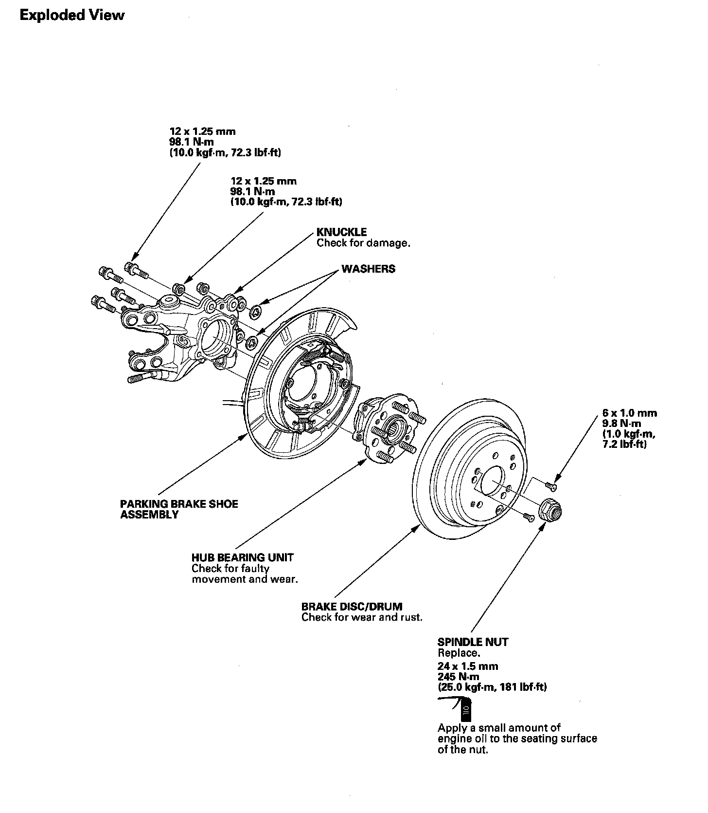
Special Tools Required
^ Ball joint remover, 28 mm 07MAC-SL0A202
^ Hub Bearing Unit Replacement
1. Raise the rear of the vehicle, and support it with safety stands in the proper locations.
2. Remove the wheel nuts (A) and front wheel.
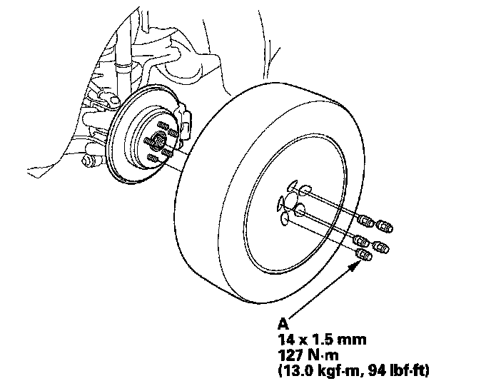
3. Remove the brake caliper bracket mounting bolts (A) and remove the caliper assembly (B) from the knuckle. To prevent damage to the caliper assembly or brake hose, use a short piece of wire to hang the caliper assembly from the undercarriage. Do not twist the brake hose excessively.
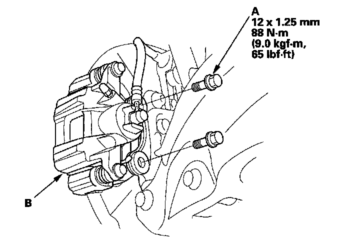
4. Remove the two washers (A).
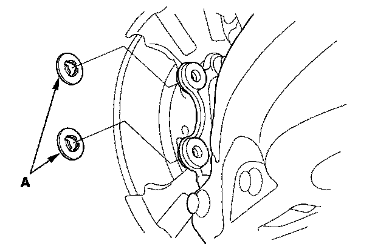
5. Raise the stake (A) then remove the spindle nut (B).
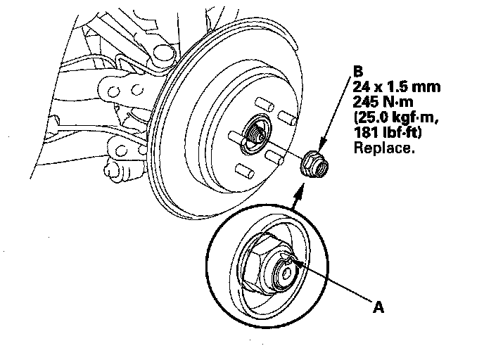
6. Remove the two 6 x 1.0 mm screws (A) attaching the disc/drum to the hub bearing unit. Release the parking brake, and remove the brake disc/drum from the hub bearing unit.
NOTE:
^ It may be necessary to back-off the parking brake adjuster nut (B) to remove the disc/drum from the hub bearing unit.
^ If the brake disc/drum has clung to the hub bearing unit. Screw two 8 x 1.25 mm bolts (C) into the brake disc/drum to push it away from the hub bearing unit. Turn each bolt 90 degrees at a time to prevent cocking the brake disc/drum.
^ After installation, check the parking brake, and adjust it necessary.
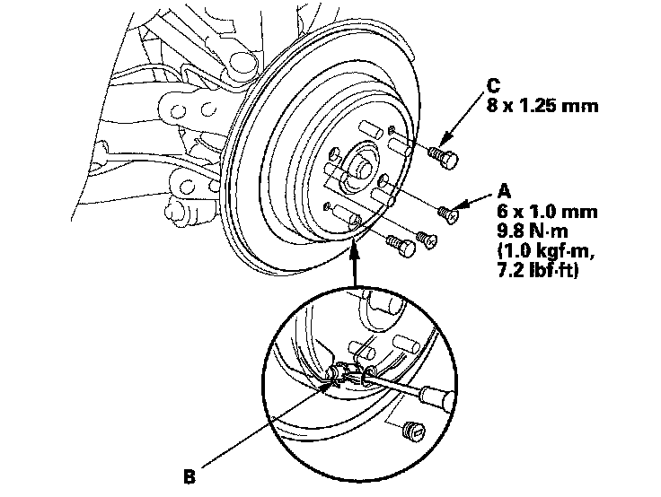
7. Remove the hub bearing unit (A).
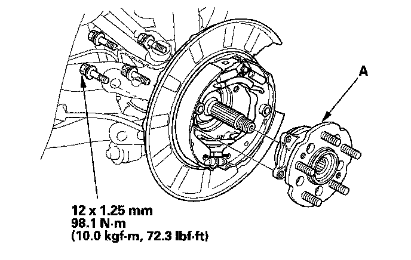
8. Check the hub bearing unit for damage and cracks.
9. Install the hub bearing unit in the reverse order of removal, and note these items:
^ Tighten all mounting hardware to the specified torque values.
^ Use a new spindle nut during reassembly.
^ Before installing the spindle nut, apply a small amount of engine oil to the seating surface of the nut. After tightening, use a drift to stake the spindle nut shoulder against the driveshaft.
^ Before installing the brake disc/drum, clean the mating surface of the hub bearing unit and the inside of the brake disc/drum.
^ Before installing the wheel, clean the mating surface of the brake disc/drum and the inside of the wheel.
^ Check the wheel alignment, and adjust it if necessary.
Knuckle Replacement
1. Remove the hub bearing unit.
2. Remove the brake hose bracket mounting bolts (A) from the knuckle.
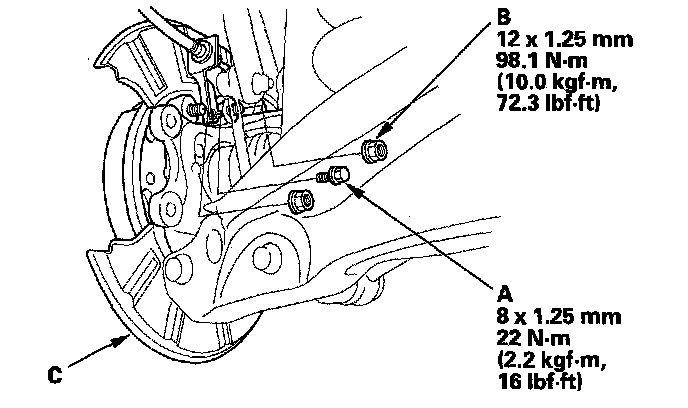
3. Remove the flange nuts (B) then remove the backing plate (C).
4. Remove the wheel sensor (A) from the knuckle (B). Do not disconnect the wheel sensor connector.
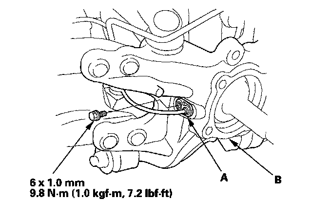
5. Remove the lock pin (A) from the upper arm ball joint, and loosen the nut (B).
NOTE: During installation, install the lock pin and nut after tightening the nut as shown.
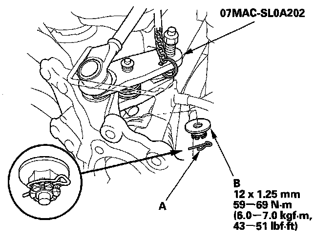
6. Disconnect the upper arm ball joint from the knuckle using the ball joint remover.
7. Remove the self-locking nut (B) washer, and flange bolt (C) then remove the lower arm A.
NOTE: Use a new self-locking nut and the new flange bolt, during reassembly.
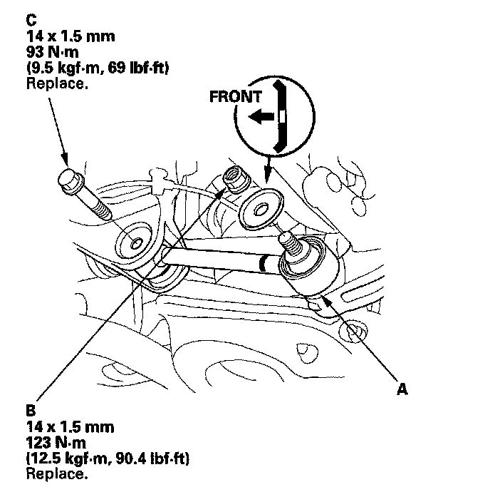
8. Remove the flange nuts (A) and separate the knuckle from the trailing arm (B).
NOTE: Use new flange nuts during reassembly.
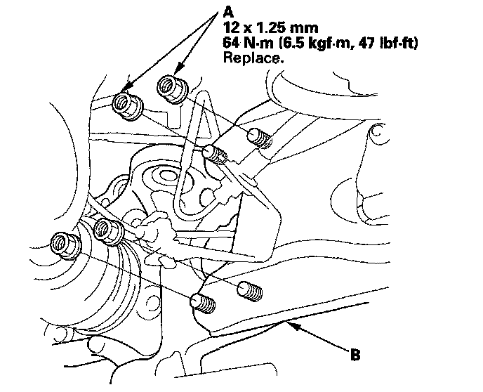
9. Place a floor jack under lower arm B, and remove the flange bolt (A) then remove the knuckle (C).
NOTE: Use the new flange bolt during reassembly.
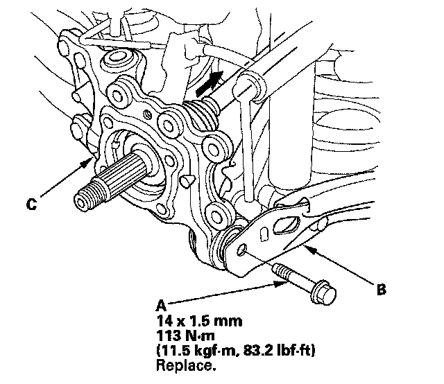
10. Install the knuckle in the reverse order of removal, and note these items:
^ Be careful not to damage the ball joint boot when connecting the upper arm to the knuckle.
^ Before connecting the ball joint to the knuckle, degrease the threaded section and tapered portion of the ball joint pin, the connecting hole, and the threaded section and mating surface of the castle nut.
^ Torque the castle nut to the lower torque specification, then tighten it only far enough to align the slot with the hole in the stud. Do not align the castle nut by loosening it.
^ First install all the components and lightly tighten the bolts and nuts, then raise the suspension to load it with the vehicle's weight before fully tightening to the specified torque values.
^ Tighten all mounting hardware to the specified torque values.
^ Before installing the wheel, clean the mating surface on the brake disc and the inside of the wheel.
^ Check the wheel alignment, and adjust it if necessary.